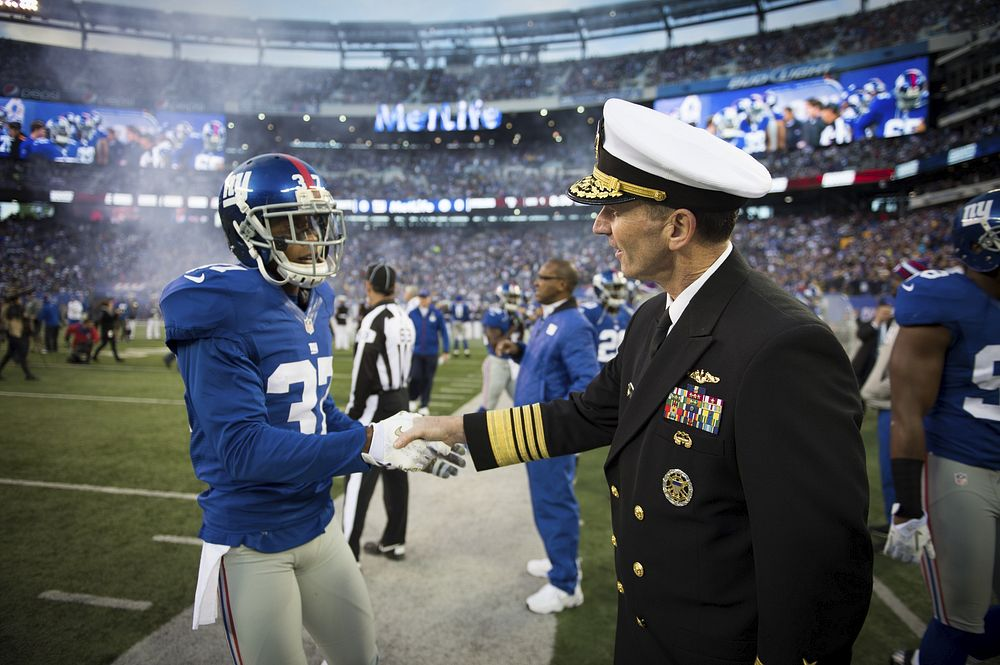
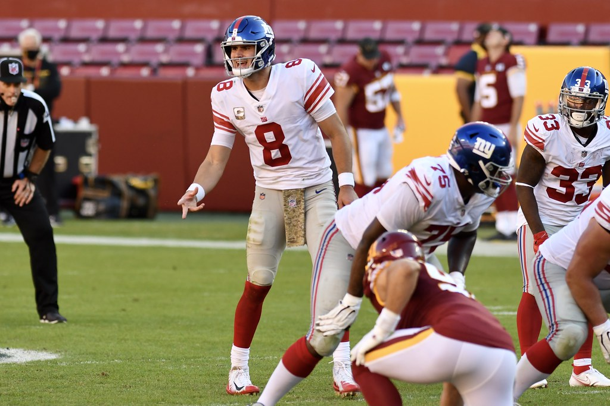

New York Giants - Weeks 10 to 14
Week 10
In the game on November 12, 2023, between the New York Giants and the Dallas Cowboys the Cowboys dominated with a 49-17 victory. Key performances included Dak Prescott of the Cowboys who threw for 404 yards and accounted for 5 total touchdowns. Star wide receiver CeeDee Lamb had 151 receiving yards and 2 touchdowns. The Giants struggled to keep up with rookie quarter back Tommy DeVito under center. The game displayed the Cowboys' offensive strength and defensive strength.

Week 11
On November 19, 2023, the New York Giants destroyed the Washington Commanders with a score of 31-19. Saquon Barkley was a star player with 140 yards and scoring two touchdowns. Giants' quarterback Tommy DeVito also had a great game completing 18 of 26 passes for 246 yards and three touchdowns. For the Commanders Sam Howell threw for 255 yards and two total touchdowns. The game was altered by major key plays and turnovers.
Week 12
In the game between the New York Giants and the New England Patriots on November 26, 2023 the Giants figured a way to come out with a victory with a final score of 10-7. Tommy DeVito stepped in for injured quarterbacks Daniel Jones and Tyrod Taylor and led the Giants by throwing for 191 yards and a touchdown. Despite a fumble and being sacked six times DeVitos efforts along with a strong defensive performance helped the giants secure a win. The Patriots struggled with quarterback issues with Mac Jones being replaced by Bailey Zappe after throwing two interceptions in the first half. A missed field goal by the Patriots in the final seconds sealed the victory for the Giants.
Week 13
As the New York Giants enter their bye the team showed mixed performances in the frist half of the 2023 season. Rookie quarterback Tommy DeVito showed intriguing skills especially in his games against the Commanders and the Patriots. Where he completed around 70% of his passes with three touchdowns and showed his running abilities. On defense Kayvon Thibodeaux has played amazing this season with a total of 11 sacks. The team also saw contributions from rookies like Jalin Hyatt, who is being a potential playmaker highlighting the need for the use of young talent.

Week 14
In their recent game against the Green Bay Packers the New York Giants clinched a crazy victory with a score of 24-22. The game was played on "Monday Night Football." With the Giants' performance breathing new life into their playoff hopes. Key moments included Randy Bullock's successful 37-yard field goal as time expired. This is a significant win for the Giants and improving their season record. This game was a major moment for the team indicating their resilience and ability to secure wins in high-pressure situations.